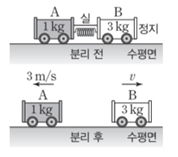
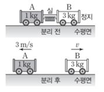

문제:
19. 그림은 마찰이 없는 수평면에서 운동하던 물체가 벽과 충돌하였을 때, 충돌 전부터 충돌 후까지 물체의 운동량을 시간에 따라 나타낸 것이다. (단, 공기 저항은 무시한다.)
19-1. 물체의 속도의 크기는 충돌 전이 충돌 후의 몇 배인가?
19-2. 벽과 충돌하는 동안, 물체가 받는 충격량의 크기를 구하시오.
19. 그림은 마찰이 없는 수평면에서 운동하던 물체가 벽과 충돌하였을 때, 충돌 전부터 충돌 후까지 물체의 운동량을 시간에 따라 나타낸 것이다. (단, 공기 저항은 무시한다.)
19-1. 물체의 속도의 크기는 충돌 전이 충돌 후의 몇 배인가?
19-2. 벽과 충돌하는 동안, 물체가 받는 충격량의 크기를 구하시오.